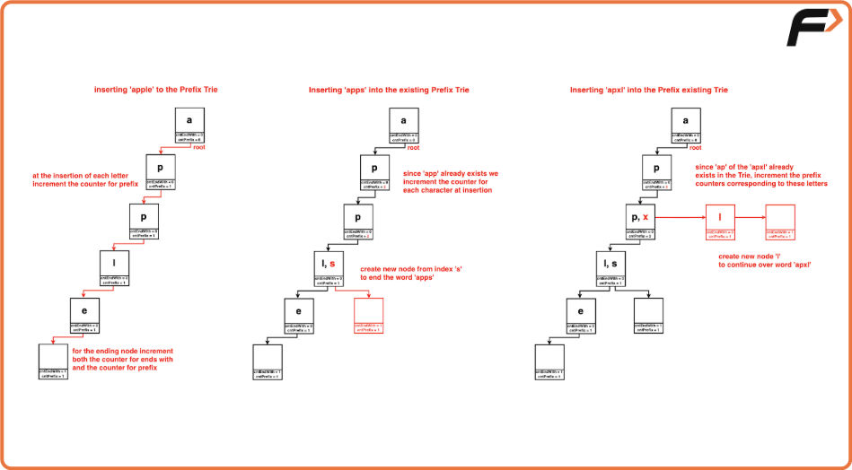
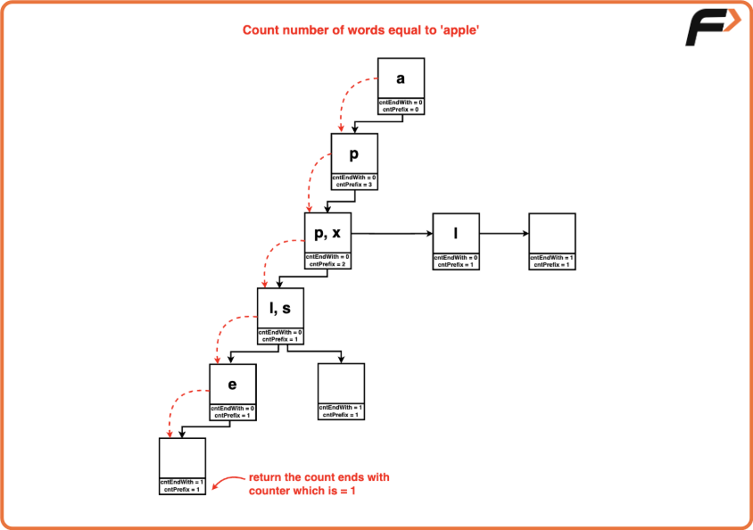
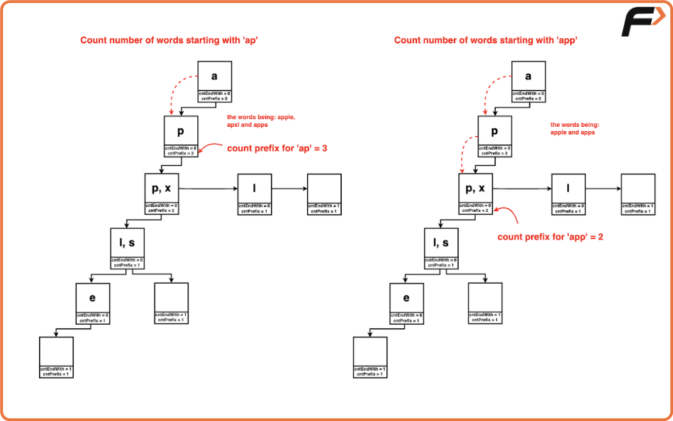
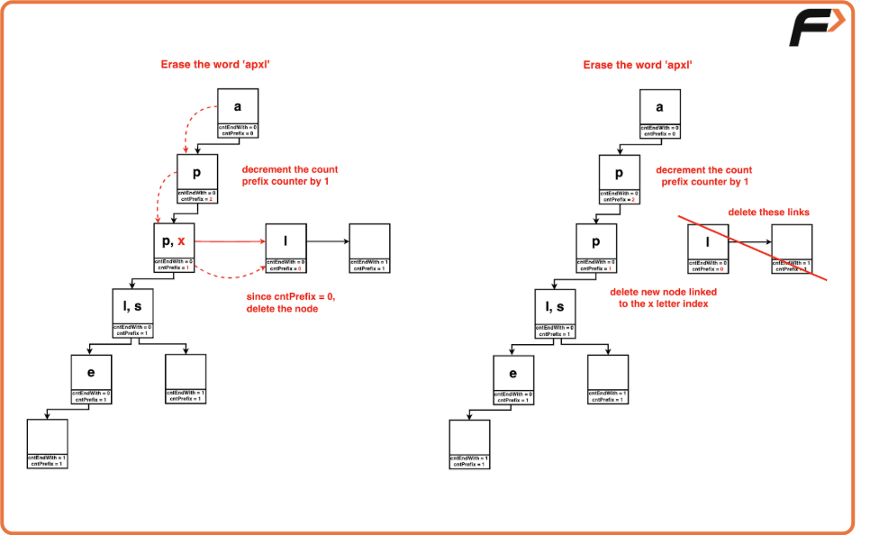

Implement Trie - II
Problem Statement:
Implement "TRIE” data structure from scratch with the following functions.
Examples
Example 1:
Input:
["Trie", "insert", "countWordsEqualTo", "insert", "countWordsStartingWith", "erase", "countWordsStartingWith"]
[ [], ["apple"], ["apple"], ["app"], ["app"], ["apple"], ["app"] ]
Output:
[null, null, 1, null, 2, null, 1]
Explanation:
- Trie trie = new Trie()
- trie.insert("apple")
- trie.countWordsEqualTo("apple") // returns 1
- trie.insert("app")
- trie.countWordsStartingWith("app") // returns 2
- trie.erase("apple")
- trie.countWordsStartingWith("app") // returns 1
Example 2:
Input:
["Trie", "insert", "countWordsEqualTo", "insert", "erase", "countWordsStartingWith"]
[ [], ["mango"], ["apple"], ["app"], ["app"], ["mango"] ]
Output:
[null, null, 0, null, null, 1]
Explanation:
- Trie trie = new Trie()
- trie.insert("mango")
- trie.countWordsEqualTo("apple") // returns 0
- trie.insert("app")
- trie.erase("app")
- trie.countWordsStartingWith("mango") // returns 1
Disclaimer: Here is the practice link to help you assess your knowledge better. It's highly recommend trying to solve it before looking at the solution.
Approach
Algorithm
- To Insert a Node in the Prefix Trie:
- Begin at the root node.
- For each character in the word:
- Check if a child node exists for the character.
- If not, create a new node and link it to the current node.
- Increase the prefix count for each node along the way.
- At the last node of the word, increase the end count to mark the end of the word.
- To Count the Number of Words Equal to the Given Word in the Trie:
- Begin at the root node.
- For each character in the word:
- Traverse through the Trie by following the characters of the word.
- If a character is not found, return 0 (indicating the word is not in the Trie).
- Once all characters are found, return the end count of the node corresponding to the last character, which gives the number of times the word appears in the Trie.
- To Count the Number of Words Starting with the Given Word in the Trie:
- Begin at the root node.
- For each character in the prefix:
- Move down the Trie following the characters of the prefix.
- If any character is not found, return 0 (indicating no words start with the given prefix).
- Once all characters are found, return the prefix count of the node corresponding to the last character.
- To Erase the Given Word from the Trie:
- Begin at the root node.
- For each character in the word:
- Move down the Trie by following the characters of the word.
- At each node, decrease the prefix count.
- Once the end of the word is reached, decrease the end count to remove the word from the Trie.




Code
#include <bits/stdc++.h>
using namespace std;
/* Define a struct for
each node in the trie */
struct Node {
/* Array to store
links to child nodes */
Node* links[26];
/* Counter for number of
words that end at this node */
int cntEndWith = 0;
/* Counter for number of words
that have this node as a prefix */
int cntPrefix = 0;
/* Function to check if the
node contains a specific key */
bool containsKey(char ch) {
/* Check if the link corresponding
to the character exists */
return (links[ch - 'a'] != NULL);
}
/* Function to get the child
node corresponding to a key */
Node* get(char ch) {
/* Return the link
corresponding to the character */
return links[ch - 'a'];
}
/* Function to insert a child
node with a specific key */
void put(char ch, Node* node) {
/* Set the link corresponding to
the character to the provided node */
links[ch - 'a'] = node;
}
/* Function to increment the
count of words that end at this node */
void increaseEnd() {
/* Increment the counter */
cntEndWith++;
}
/* Function to increment the count of
words that have this node as a prefix */
void increasePrefix() {
/* Increment the counter */
cntPrefix++;
}
/* Function to decrement the count
of words that end at this node */
void deleteEnd() {
/* Decrement the counter */
cntEndWith--;
}
/* Function to decrement the count of
words that have this node as a prefix */
void reducePrefix() {
/* Decrement the counter */
cntPrefix--;
}
};
/* Define a class for the
trie data structure */
class Trie {
private:
/* Pointer to the
root node of the trie */
Node* root;
public:
/* Constructor to initialize
the trie with an empty root node */
Trie() {
/* Create a new root node */
root = new Node();
}
/* Function to insert
a word into the trie */
void insert(string word) {
/* Start from the root node */
Node* node = root;
/* Iterate over each
character in the word */
for (int i = 0; i < word.size(); i++) {
/* If the character is
not already in the trie */
if (!node->containsKey(word[i])) {
/* Create a new node
for the character */
node->put(word[i], new Node());
}
/* Move to the child node
corresponding to the character */
node = node->get(word[i]);
/* Increment the prefix
count for the node */
node->increasePrefix();
}
/* Increment the end count
for the last node of the word */
node->increaseEnd();
}
/* Function to count the number
of words equal to a given word */
int countWordsEqualTo(string word) {
/* Start from the root node */
Node* node = root;
/* Iterate over each character in the word */
for (int i = 0; i < word.size(); i++) {
/* If the character is found in the trie */
if (node->containsKey(word[i])) {
/* Move to the child node
corresponding to the character */
node = node->get(word[i]);
} else {
/* Return 0 if the
character is not found */
return 0;
}
}
/* Return the count of
words ending at the node */
return node->cntEndWith;
}
/* Function to count the number of
words starting with a given prefix */
int countWordsStartingWith(string word) {
/* Start from the root node */
Node* node = root;
/* Iterate over each character in the prefix */
for (int i = 0; i < word.size(); i++) {
/* If the character is found in the trie */
if (node->containsKey(word[i])) {
/* Move to the child node
corresponding to the character */
node = node->get(word[i]);
} else {
/* Return 0 if the
character is not found */
return 0;
}
}
/* Return the count of
words with the prefix */
return node->cntPrefix;
}
/* Function to erase a
word from the trie */
void erase(string word) {
/* Start from the root node */
Node* node = root;
/* Iterate over each
character in the word */
for (int i = 0; i < word.size(); i++) {
/* If the character is
found in the trie */
if (node->containsKey(word[i])) {
/* Move to the child node
corresponding to the character */
node = node->get(word[i]);
/* Decrement the prefix
count for the node */
node->reducePrefix();
} else {
/* Return if the
character is not found */
return;
}
}
/* Decrement the end count
for the last node of the word */
node->deleteEnd();
}
};
int main() {
Trie trie;
trie.insert("apple");
trie.insert("apple");
cout << "Inserting strings 'apple' twice into Trie" << endl;
cout << "Count Words Equal to 'apple': ";
cout << trie.countWordsEqualTo("apple") << endl;
cout << "Count Words Starting With 'app': ";
cout << trie.countWordsStartingWith("app") << endl;
cout << "Erasing word 'apple' from trie" << endl;
trie.erase("apple");
cout << "Count Words Equal to 'apple': ";
cout << trie.countWordsEqualTo("apple") << endl;
cout << "Count Words Starting With 'app': ";
cout << trie.countWordsStartingWith("app") << endl;
cout << "Erasing word 'apple' from trie" << endl;
trie.erase("apple");
cout << "Count Words Starting With 'app': ";
cout << trie.countWordsStartingWith("app") << endl;
return 0;
}Complexity Analysis
Time Complexity: O(N), where N is the length of the word or prefix being processed. Each method (inserting a word, counting words equal to a given word, counting words starting with a prefix, and erasing a word) involves traversing the Trie for each character of the input word or prefix. Thus, the time complexity is linear relative to the length of the word or prefix being processed.
Space Complexity: O(N), where N is the total number of characters across all words inserted into the Trie. The space complexity depends on the number of unique words added to the Trie and the average length of these words.